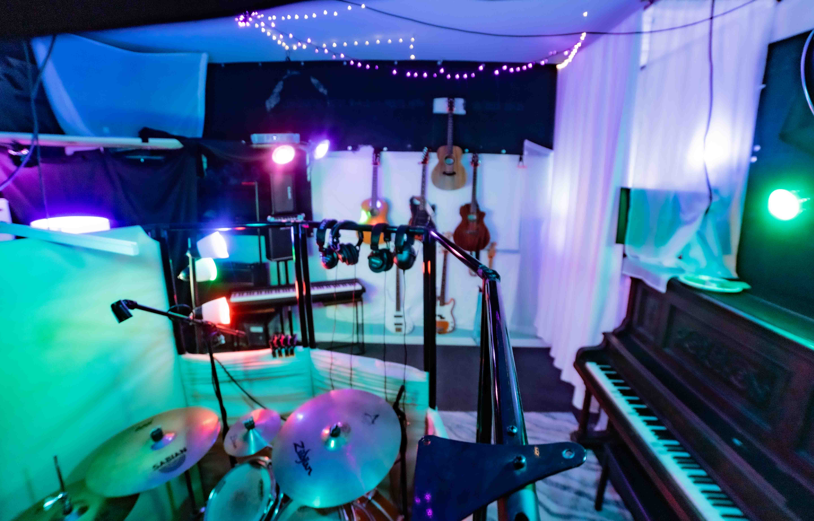

Build a Song From Scratch · Full Build
Bring an idea. We’ll build it by playing it.
A lyric, a melody, a voice memo, a reference track, or just a direction. We work out the arrangement and build the music together — real drums, bass, guitar, and keys — then record your vocals in the room.
You don’t need a finished track, prepared material, sheet music, or studio experience.
Two ways artists start here
Studio San Francisco is a recording studio with a producer and engineer in the room. That means both of these are normal, and neither one is the “right” way to show up.
You already have a beat or a finished song
You have an instrumental, a purchased beat, or a track that just needs vocals and a proper recording. We track it, comp it, and get the performance right.
Recording Session — $60/hr, engineer always included
You have an idea and nothing else
Lyrics in your notes app. A hummed melody. A voice memo from the car. A song you love and want something in that direction. We build the rest from there.
Full Build — $85/hr while we’re building together
What we build together
A Full Build is hands-on work on your song, not studio rental. Depending on the song, it can include any of this:
- Building the music by playing it — drums, bass, guitar, keys
- Working out tempo, key, and feel to fit your voice
- Simple programmed parts where a song calls for one
- Developing song structure — verse, chorus, bridge, intro, outro, and how it moves
- Turning voice memos and rough ideas into a working, arranged song
- Recording your vocals over what we just built
- Editing and mixing the finished track

What this is — and what it isn’t
Worth being straight about, because it saves us both a session.
What you get
A recording engineer and multi-instrumentalist building the song with you. Parts get played — drums, bass, guitar, keys — and arranged in the room while you make the calls. Simple programmed parts where a song wants one. Then a proper recording of your vocal, and a mix that holds up.
What this isn’t
A beat store, or a producer with a signature sound you’re buying into. If you need a fully programmed instrumental in a specific production style, someone who lives in that style will serve you better. Bring them, or bring their beat — I’ll record and mix it properly, and that’s a $60/hr session, not a build.
Not sure which one your song needs? That’s a good reason to take the free planning call before booking anything.
How a build actually goes
You bring whatever you have
A voice memo, a verse, a reference song, a melody you can only hum. Rough is fine. Unfinished is fine. Nothing written down is fine.
We find the direction
Tempo, key, feel, and references. This is usually the fastest part, and it decides everything after it.
We build the music
Drums, bass, keys, guitars — played, not bought — plus a simple programmed part where a song calls for one. You are in the room making calls the whole time, not waiting on an email.
We record your vocals
Over the beat we just built, with an engineer handling setup, takes, and comping.
Editing and mixing, quoted separately
Once the song exists, I listen to it, tell you roughly how many hours it needs, and get your OK before starting. That work is billed at the $45/hr solo rate.
What it costs
Two rates cover almost everything. $85/hr is hands-on build time while we are actively working on the song together in the room. $45/hr is solo time when I am working on your project without you — editing, mixing, session prep, and added instrumentation. Every piece of solo work is scoped and quoted before it starts.
A song built from scratch costs more than a standard recording session for a simple reason: with a finished beat, the creative work is already done and we are recording. From scratch, the beat, the arrangement, and the instrumentation all have to be made first, and that takes hours in the room.
Lowest scope. Vocals tracked, comped, and mixed over your existing instrumental. This is the standard path for a finished single.
Moderate scope. We build an instrumental and capture a working version of the song — enough to hear it properly and decide where it goes next. Quoted after we talk through the idea.
Highest scope. The complete path from idea to finished mix. Estimated up front so you know the range before booking, and revisited with you if the song grows.
No fixed per-song price, because no two songs take the same number of hours. What you get instead is a real estimate before the work starts, and a heads-up before anything goes past it.
Common questions
Can you make a beat for me?
Yes. Making beats and instrumentals from scratch is a core service here. We choose sounds, tempo, and key together, build the drums and instrumentation, and shape the arrangement in the room with you. This is booked as Custom Song Production at $85/hr.
I only have lyrics. Can you help me turn them into a song?
Yes. Lyrics alone are a completely normal starting point. We work out melody, tempo, key, and feel, then build music underneath by playing it. You do not need any musical training or prepared material to start.
I have a voice memo but no instrumental. What happens next?
A voice memo is enough. We listen to it together, pull out the melody or idea worth keeping, and build parts around it - played, arranged, and recorded here. Rough phone recordings are one of the most common ways projects start.
Do I need a finished beat before I book?
No. You can arrive with a finished track, a half-finished idea, or nothing but a concept. If you already have an instrumental, a standard Recording Session at $60/hr is usually the right fit. If the song still needs to be built, that is Full Build at $85/hr.
Can you produce, record, and mix an entire song?
Yes, for songs built around live instrumentation — idea to finished mix: arrangement, played parts, vocal recording, editing, and mixing. Build time in the room is $85/hr, and editing and mixing are quoted separately at the $45/hr solo rate. If a song needs a specific programmed production style, bring a producer or a beat and I’ll handle recording and mixing from there.
Can I record vocals over a beat I already have?
Yes. Bring the instrumental as a file or a link and we track vocals over it. That is a standard Recording Session at $60/hr with an engineer always included.
Can you help me finish a song I already started?
Yes, and this is one of the best fits for the room. We can add played instrumentation, rebuild or replace parts of the arrangement, re-record vocals, or fix what is not working. Bring whatever you have, including stems or a session file from another studio.
How much does it cost to make one song from scratch?
It depends on where you start. Recording vocals over a track you already have typically runs $350–$650 for a finished single. Building a song from scratch adds hands-on build time at $85/hr, so it costs more than a standard recording session. Every project is quoted before work begins, and most people start with the $89 two-hour Launch Intro or a free planning call.
Start the song
Two ways in, and both of them are low commitment.
The two-hour Launch Intro is enough to start building a beat, test a direction, and record initial ideas. It is a starting point, not a guarantee of a finished, release-ready single — production, editing, mixing, and revisions may need more time. If your project needs a fuller estimate first, take the free planning call instead.